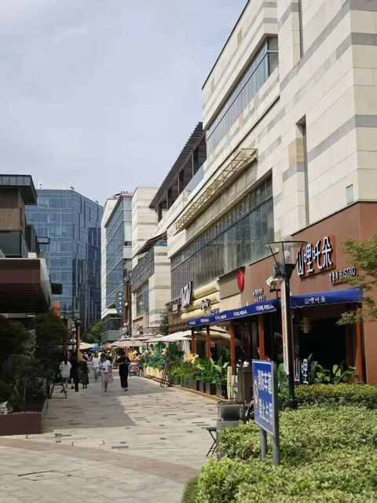
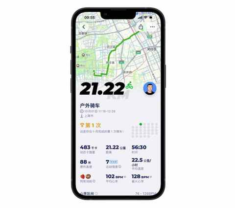
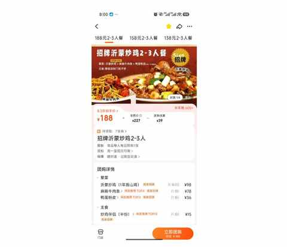
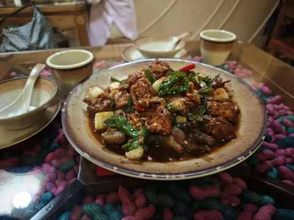
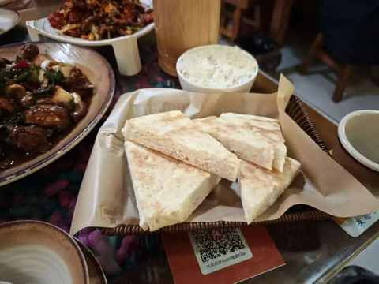
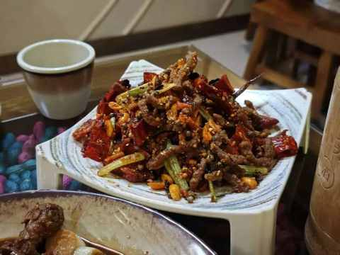
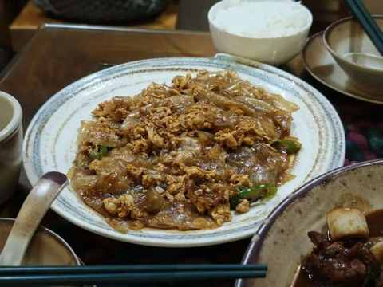
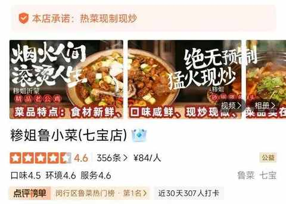
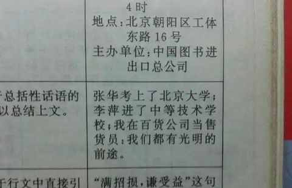

国庆假期第一天，三个沪漂中年男人的饭局
一、三个人用三种交通方式
1️⃣ 目的地：七宝宝龙城
第一次过来这边，绝大多数店铺是吃的喝的，各种饭馆和奶茶店。

2️⃣ 哪三个人
我们3个35+的中年男人，当下的状态都是无业，太适合在假期的时候一起吃吃喝喝聊聊。
以下顺序按抵达的先后排列：
- 我：距离20km，骑自行车
- 超哥：距离最近的，搭乘公交
- 三哥：距离最远的，从浦东坐地铁
作为饭局的发起人，又是三哥和超哥共同的朋友，我得是第一个到，20km 的距离骑车耗时 1 小时，同时也完成了运动打卡。

二、饭局吃什么
饭局吃什么可能是比聊什么、在哪里吃、和谁吃优先级同样重要的事情，不求吃的多么过瘾多么好吃，但求味道能兼容参与饭局成员的同时能有所特色。
如果再有 1-2 个菜比较惊艳便是可遇而不可求一的一顿饭。
1️⃣ 点评首页刷到的山东菜
因为在松江吃过几次山东菜，吃下来感觉很过瘾，适合带朋友一起吃吃。
但松江还是远了点，对住在上海其他区域的朋友不友好，所以当点评给我推荐这家七宝店的时候就收藏了店铺，以备不时之需。
2️⃣ 吃的什么菜
选了一个适合 3 个人吃的套餐，考虑到分量和三个中年男人的饭量，加了两个菜（ 青菜和风味茄子 ）和三碗米饭。

上菜速度是我去过的山东菜馆里面最快的，不到 10 分钟套餐全都上齐：




上来的菜是温热的，不是热气腾腾的感觉，再看了看点评中的宣传，不禁陷入沉思，大厨的效率是真高啊。

你可能会问，三个中年人吃饭为什么没有喝酒，因为我们都默认不喝酒，约饭的时候谁都没提喝什么酒的事情。
3️⃣ 味道尚可但平淡的一餐
在三人会晤的时正式开吃前，按我的惯例和习惯，依然给两位好友都送上我选的书和茶叶，没有人能逃过我送的书。
① 平淡能导致尽量少犯错
吃完后走出饭馆便第一时间问了两位朋友的反馈，整体都说味道还行，估计也是他们第一次吃这个类型的山东菜。
我吃下来的感受是，现在的商场的连锁店越来越追求是味道上稍有特色但兼容绝大多数人，吃完第二天就能完全忘记是什么味道。也难怪川菜和火锅能长盛不衰，被辣一次至少能记得半个月。
没有味觉上的记忆，甚至我现在看着昨天拍的高清图也想不起来味道是什么样，不过这种策略确实能保障尽量少犯错和不犯错，很难触及到食客的雷点。
② 健身人眼中连锁餐饮的弊病
1）分量不足，不够吃
现在出餐速度越来越快，餐盘越来越精致，出片效果也很好但是分量能不能也别打折啊，盘子别那么浅啊。
和老婆一起在外面吃饭的时候一直会感叹其餐具的好看及精致程度，但也能越来越感受到定制的痕迹，目测的菜量和实际的菜量差的有点多
2）蛋白质，严重不足
- 健身人不怕碳水吃多了，因为多动动就行
- 健身人不怕油脂摄入过多，因为在外面吃饭就是偶尔 “放纵” 并不是常态
- 健身人最怕的是：蛋白质没吃够会掉肌肉，在外面吃饭的直观感受就是肉太少
3）味道和性价比，是其次
如果上面两个问题得以解决，味道和分量倒是其次。
不过在仔细回顾了之后发现，火锅、烤肉、自助等确实很更好的量化，甚至都有了性价比，味道还能自己来调。
后面再组局吃饭，会优先个三种连锁店。
三、 中年男人聊什么
1️⃣ 聊近况
- 我：已婚已育，休业近一年的个体户（约等于关了门的小卖部）
- 超哥：单身，未婚未育，深漂返沪，节后要入职新公司的金融行业运营岗
- 三哥：恋爱中，未婚未育，节前刚离职的全栈工程师
不同的是各自状况稍有差别，相同的是年龄的渐长，是生活和工作的变化。
不管这些变化是主动还是被动，变化已经发生，在对手已经出牌的情况下，你也得想着如何打好手上的牌。
2️⃣ 聊国家大事与国际热点
中年人吃饭，怎么可能不聊这些。
倒不如发起一个挑战，把一群中年男人聚在一起，挑战不聊国家大事和国际热点，除非是一群钓鱼佬在一起，要不然必然挑战失败。
因为所在行业和所从事工作及生活状态的不同，整体上的感觉是大同小异的。
体感上的微小差异并不妨碍我们都认为现在整体上是一个需要决策更谨慎的阶段，大环境整体不容乐观，对当下的所有人都是考验。
我提了一个最近想到的点：
如果在全球都任意国家或地区重启人生，你还是现在的你吗？
3️⃣ 聊搞钱
- 我：
- 超哥：
- 三哥：
四、小结
中年人的饭局并不无聊，去除掉一些浮夸的关于国家大事和国际热点的探讨，其他的全是对现实并不热烈的探讨。
国庆假期的第一个，三个农村出生的沪漂中年男人在瑞幸门口喝完咖啡之后，各自散去，与来的时候不同的是，散场的时候我们都选择的同一个出行方式：骑自行车。
- 我：戴上头盔，找到锁好的自行车
- 超哥：发现公交车太费时，决定扫一个共享单车
- 三哥：距离合适，准备扫一个共享单车去虹桥送女朋友
网络上有一个很知名的梗：“ 我们都有光明的未来 ”，该梗源于 《新华字典》1998修订本中关于冒号的例句：“张华考上了北京大学；李萍进了中等技术学校；我在百货公司当售货员：我们都有光明的前途。”

在我心中，这并不是一个梗，这是对美好生活的向往，是许多人在努力的方向！
一个休业的体户在摸索着，一个程序员决定去卖相机并成为独立开发者，一个即将入职新公司的运营从业者在思考着各种小生意，我们 三个农村出生的沪漂中年男人都有光明的前途和未来！